Bayesian Filtering and Smoothing
SEL5917
Prof. Dr. Marcos Rogério Fernandes
September 15, 2026
Objectives:
The objectives of this class are to understand:
- Bayesian filtering;
- Chapman-Komogorov Equation;
- The Kalman Filter;
- Bayesian Smoothing;
- The RTS Smoother.
Probabilistic State Space Model
Nomenclature
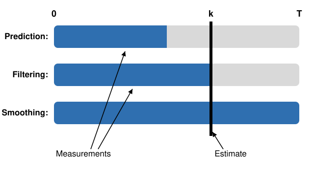
Bayesian Filtering
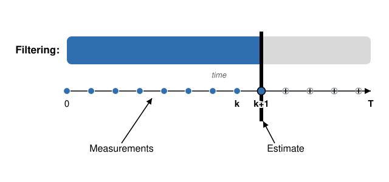
Bayesian Filtering
- Initialization: starts with a prior distribution $p(x_0)$;
- Prediction step (Chapman-Komogorov Eq.): $$ p(x_{k+1}|y_{0:k})=\int p(x_{k+1}|x_k,y_{0:k})p(x_k|y_{0:k})dx_k $$
- Update step (Bayes' rule): $$ p(x_{k+1}|y_{0:k+1})=\frac{p(y_{k+1}|x_{k+1})p(x_{k+1}|y_{0:k})}{p(y_{k+1}|y_{0:k})} $$
Bayesian Filtering
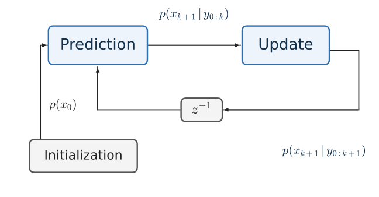
Proof: Bayesian Filtering
Update Step
We want to obtain $$ p(x_{k+1}|y_{0:k+1})=p(x_{k+1}|y_{0:k},y_{k+1}) $$ From the Bayes' rule, one has $$ p(x_{k+1}|y_{0:k+1})=\frac{p(y_{k+1}|x_{k+1},y_{0:k})p(x_{k+1}|y_{0:k})}{p(y_{k+1}|y_{0:k})} $$Proof: Bayesian Filtering
Update Step
We want to obtain $$ p(x_{k+1}|y_{0:k+1})=p(x_{k+1}|y_{0:k},y_{k+1}) $$ From the Bayes' rule, one has $$ p(x_{k+1}|y_{0:k+1})=\frac{p(y_{k+1}|x_{k+1})p(x_{k+1}|y_{0:k})}{p(y_{k+1}|y_{0:k})} $$Proof: Bayesian Filtering
Prediction Step
Note that $$ p(x_{k+1}|y_{0:k})=\int p(x_{k+1},x_k|y_{0:k})dx_k $$Proof: Bayesian Filtering
Prediction Step
Note that $$ \begin{aligned} p(x_{k+1}|y_{0:k})&=\int p(x_{k+1},x_k|y_{0:k})dx_k\\ &=\int p(x_{k+1}|x_k,y_{0:k})p(x_k|y_{0:k})dx_k \end{aligned} $$Proof: Bayesian Filtering
Prediction Step
Note that $$ \begin{aligned} p(x_{k+1}|y_{0:k})&=\int p(x_{k+1},x_k|y_{0:k})dx_k\\ &=\int p(x_{k+1}|x_k)p(x_k|y_{0:k})dx_k \end{aligned} $$Chapman-Komogorov Equation
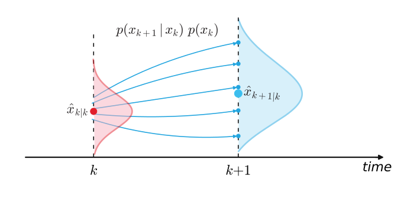
Update Step (Measurement Assimilation)
Update Step (Measurement Assimilation)
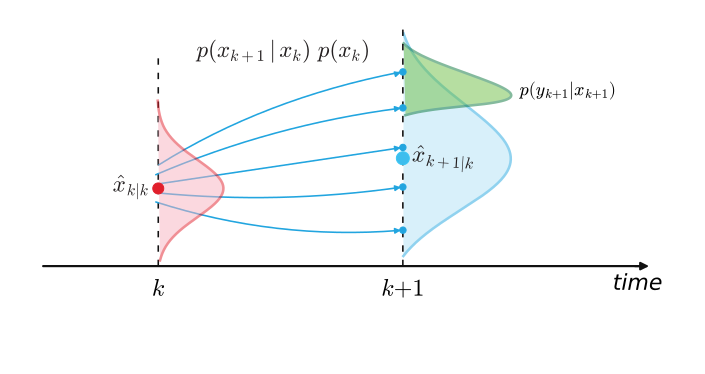
Update Step (Measurement Assimilation)
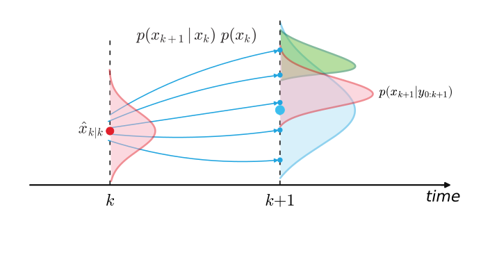
Asynchronous Sensors
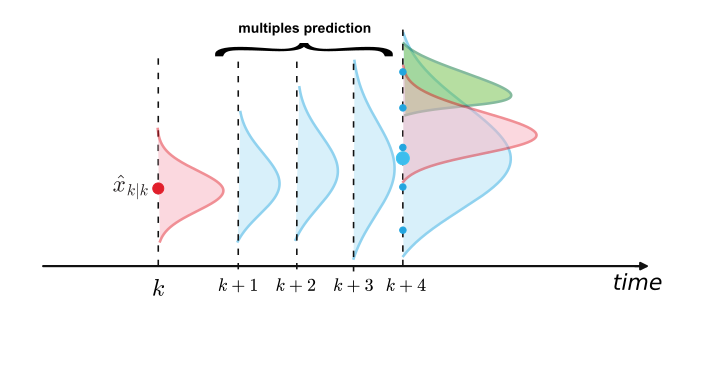
The Kalman Filter
Dynamic State Space Model:
$$ \begin{aligned} x_{k+1}&=A_kx_k+B_ku_k+w_k,\quad w_{k}\sim\mathcal{N}(0,Q_{k})\\ y_{k+1}&=H_{k+1}x_{k+1}+\epsilon_{k+1},\quad \epsilon_{k+1}\sim\mathcal{N}(0,R_{k+1}) \end{aligned} $$Probabilistic State Space Model:
$$ \begin{aligned} x_{k+1}&\sim \mathcal{N}(A_kx_k+B_ku_k,Q_k)\\ y_{k+1}&\sim \mathcal{N}(H_{k+1}x_{k+1},R_{k+1}) \end{aligned} $$The Kalman Filter
- The Prediction distribution is Gaussian: $$ p(x_{k+1}|y_{0:k})=\mathcal{N}(\hat{x}_{k+1|k},P_{k+1|k}) $$
- The posterior distribution is also Gaussian: $$ p(x_{k+1}|y_{0:k+1})=\mathcal{N}(\hat{x}_{k+1|k+1},P_{k+1|k+1}) $$
The Kalman Filter
Proof: Kalman Filter
Proof: Kalman Filter
Proof: Kalman Filter
Prediction Step
Note that $$ \begin{aligned} p(x_{k+1},x_k|y_{0:k})&=p(x_{k+1}|x_k,y_{0:k})p(x_k|y_{0:k})\\ \end{aligned} $$Proof: Kalman Filter
Prediction Step
Note that $$ \begin{aligned} p(x_{k+1},x_k|y_{0:k})&=p(x_{k+1}|x_k)p(x_k|y_{0:k})\\ \end{aligned} $$Proof: Kalman Filter
Prediction Step
Note that $$ \begin{aligned} p(x_{k+1},x_k|y_{0:k})&=\underbrace{p(x_{k+1}|x_k)}_{\text{dynamic model}}\underbrace{p(x_k|y_{0:k})}_{\text{filtering}}\\ \end{aligned} $$Proof: Kalman Filter
Prediction Step
Note that $$ \begin{aligned} p(x_{k+1},x_k|y_{0:k})&=\underbrace{\mathcal{N}(A_kx_k+B_ku_k,Q_k)}_{\text{dynamic model}}\underbrace{\mathcal{N}(\hat{x}_{k|k},P_{k|k})}_{\text{filtering}}\\ \end{aligned} $$Proof: Kalman Filter
Prediction Step
Note that $$ \begin{aligned} p(x_{k+1},x_k|y_{0:k})&=\mathcal{N}(A_kx_k+B_ku_k,Q_k)\mathcal{N}(\hat{x}_{k|k},P_{k|k})\\ &=\mathcal{N}\Bigl(\begin{bmatrix}\hat{x}_{k|k}\\ A_k\hat{x}_{k|k}+B_ku_k\end{bmatrix},\begin{bmatrix} P_{k|k} & P_{k|k}A_k^\trp \\ A_k P_{k|k} & A_kP_{k|k}A_k^\trp+ Q_k \end{bmatrix}\Bigr) \end{aligned} $$Proof: Kalman Filter
Prediction Step
Thus, before the new measurement arrives, we have$$ \begin{aligned} \begin{bmatrix}x_k\\x_{k+1}\end{bmatrix}\sim \mathcal{N}\Bigl(\begin{bmatrix}\hat{x}_{k|k}\\ A_k\hat{x}_{k|k}+B_ku_k\end{bmatrix},\begin{bmatrix} P_{k|k} & P_{k|k}A_k^\trp \\ A_k P_{k|k} & A_kP_{k|k}A_k^\trp+ Q_k \end{bmatrix}\Bigr) \end{aligned} $$
Proof: Kalman Filter
Prediction Step
Thus, before the new measurement arrives, we have$$ \begin{aligned} \begin{bmatrix}x_k\\x_{k+1}\end{bmatrix}\sim \mathcal{N}\Bigl(\begin{bmatrix}\hat{x}_{k|k}\\ A_k\hat{x}_{k|k}+B_ku_k\end{bmatrix},\begin{bmatrix} P_{k|k} & P_{k|k}A_k^\trp \\ A_k P_{k|k} & A_kP_{k|k}A_k^\trp+ Q_k \end{bmatrix}\Bigr) \end{aligned} $$
From Lemma 1, we conclude that $p(x_{k+1})=\mathcal{N}(\hat{x}_{k+1|k},P_{k+1|k})$ with $$ \hat{x}_{k+1|k}=A_k\hat{x}_{k|k}+B_ku_k\\ P_{k+1|k}=A_kP_{k|k}A_k^\trp + Q_k $$Proof: Kalman Filter
Update Step
Note that $$ \begin{aligned} p(x_{k+1},y_{k+1}|y_{0:k})&=p(y_{k+1}|x_{k+1},y_{0:k})p(x_{k+1}|y_{0:k})\\ \end{aligned} $$Proof: Kalman Filter
Update Step
Note that $$ \begin{aligned} p(x_{k+1},y_{k+1}|y_{0:k})&=p(y_{k+1}|x_{k+1})p(x_{k+1}|y_{0:k})\\ \end{aligned} $$Proof: Kalman Filter
Update Step
Note that $$ \begin{aligned} p(x_{k+1},y_{k+1}|y_{0:k})&=\underbrace{p(y_{k+1}|x_{k+1})}_{\text{measurement model}}\underbrace{p(x_{k+1}|y_{0:k})}_{\text{prediction}}\\ \end{aligned} $$Proof: Kalman Filter
Update Step
Note that $$ \begin{aligned} p(x_{k+1},y_{k+1}|y_{0:k})&=\underbrace{\mathcal{N}(H_{k+1}x_{k+1},R_{k+1})}_{\text{measurement model}}\underbrace{\mathcal{N}(\hat{x}_{k+1|k},P_{k+1|k})}_{\text{prediction}}\\ \end{aligned} $$Proof: Kalman Filter
Update Step
Note that $$ \begin{aligned} p(x_{k+1},y_{k+1}|y_{0:k})&=\mathcal{N}(H_{k+1}x_{k+1},R_{k+1})\mathcal{N}(\hat{x}_{k+1|k},P_{k+1|k})\\ &=\mathcal{N}\Bigl(\begin{bmatrix}\hat{x}_{k+1|k}\\ H_{k+1}\hat{x}_{k+1|k}\end{bmatrix},\begin{bmatrix} P_{k+1|k} & P_{k+1|k}H_{k+1}^\trp \\ H_{k+1} P_{k+1|k} & S_{k+1} \end{bmatrix}\Bigr) \end{aligned} $$ with $$ S_{k+1}=H_{k+1}P_{k+1|k}H_{k+1}^\trp+ R_{k+1} $$Proof: Kalman Filter
Update Step
Thus, when a new measurements arrives, we have$$ \begin{aligned} \begin{bmatrix}x_{k+1}\\y_{k+1}\end{bmatrix}&\sim \mathcal{N}\Bigl(\begin{bmatrix}\hat{x}_{k+1|k}\\ H_{k+1}\hat{x}_{k+1|k}\end{bmatrix},\begin{bmatrix} P_{k+1|k} & P_{k+1|k}H_{k+1}^\trp \\ H_{k+1} P_{k+1|k} & S_{k+1} \end{bmatrix}\Bigr) \end{aligned} $$ with $$ S_{k+1}=H_{k+1}P_{k+1|k}H_{k+1}^\trp+ R_{k+1} $$
Proof: Kalman Filter
Update Step
From Lemma 1, we have $$ \begin{aligned} p(x_{k+1}|y_{k+1},y_{0:k})&=p(x_{k+1}|y_{0:k+1})\\ &=\mathcal{N}(\hat{x}_{k+1|k+1},P_{k+1|k+1}) \end{aligned} $$ with $$ \begin{aligned} \hat{x}_{k+1|k+1}&=\hat{x}_{k+1|k}+P_{k+1|k}H_{k+1}^\trp S_{k+1}^{-1}(y_{k+1}-H_{k+1}\hat{x}_{k+1|k})\\ P_{k+1|k+1}&=P_{k+1|k}-P_{k+1|k}H_{k+1}^\trp S_{k+1}^{-1} H_{k+1} P_{k+1|k} \end{aligned} $$Proof: Kalman Filter
Update Step
From Lemma 1, we have $$ \begin{aligned} p(x_{k+1}|y_{k+1},y_{0:k})&=p(x_{k+1}|y_{0:k+1})\\ &=\mathcal{N}(\hat{x}_{k+1|k+1},P_{k+1|k+1}) \end{aligned} $$ with $$ \begin{aligned} \hat{x}_{k+1|k+1}&=\hat{x}_{k+1|k}+\underbrace{P_{k+1|k}H_{k+1}^\trp S_{k+1}^{-1}}_{K}(y_{k+1}-H_{k+1}\hat{x}_{k+1|k})\\ P_{k+1|k+1}&=P_{k+1|k}-\underbrace{P_{k+1|k}H_{k+1}^\trp S_{k+1}^{-1}}_{K} H_{k+1} P_{k+1|k} \end{aligned} $$Proof: Kalman Filter
Update Step
From Lemma 1, we have $$ \begin{aligned} p(x_{k+1}|y_{k+1},y_{0:k})&=p(x_{k+1}|y_{0:k+1})\\ &=\mathcal{N}(\hat{x}_{k+1|k+1},P_{k+1|k+1}) \end{aligned} $$ with $$ \begin{aligned} \hat{x}_{k+1|k+1}&=\hat{x}_{k+1|k}+K(y_{k+1}-H_{k+1}\hat{x}_{k+1|k})\\ P_{k+1|k+1}&=P_{k+1|k}-K H_{k+1} P_{k+1|k}\\ K&=P_{k+1|k}H_{k+1}^\trp S_{k+1}^{-1} \end{aligned} $$Proof: Kalman Filter
Update Step
From Lemma 1, we have $$ \begin{aligned} p(x_{k+1}|y_{k+1},y_{0:k})&=p(x_{k+1}|y_{0:k+1})\\ &=\mathcal{N}(\hat{x}_{k+1|k+1},P_{k+1|k+1}) \end{aligned} $$ with $$ \begin{aligned} \hat{x}_{k+1|k+1}&=\hat{x}_{k+1|k}+K(y_{k+1}-H_{k+1}\hat{x}_{k+1|k})\\ P_{k+1|k+1}&=[I-K H_{k+1}] P_{k+1|k}\\ K&=P_{k+1|k}H_{k+1}^\trp S_{k+1}^{-1}\quad \square \end{aligned} $$Example: Tracking with GPS
Example: Kalman Filter Tracking (GPS)
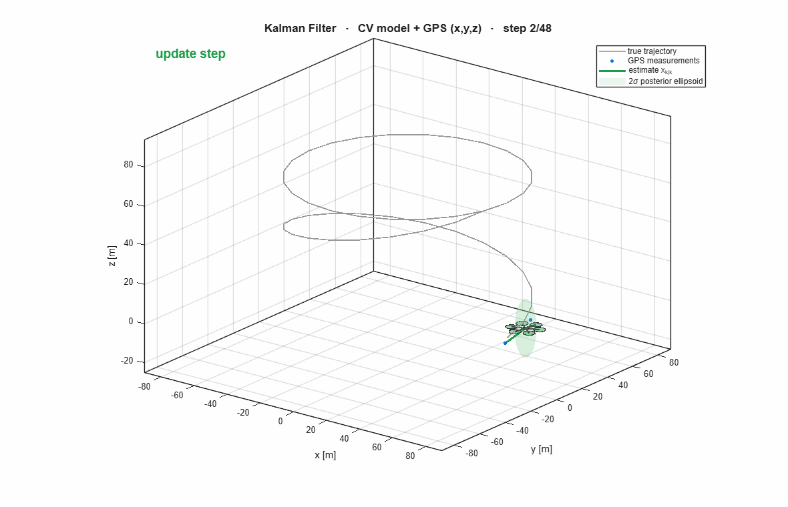
The Bayesian Smoothing
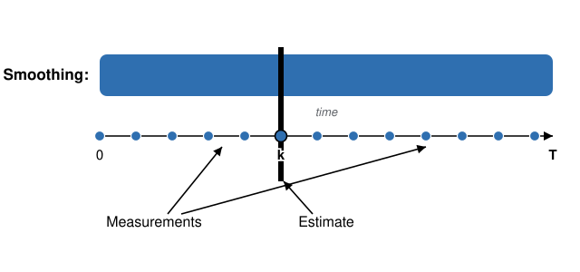
The Bayesian Smoothing
Proof: Bayesian Smoothing
Proof: Bayesian Smoothing
Proof: Bayesian Smoothing
Proof: Bayesian Smoothing
Proof: Bayesian Smoothing
The Bayesian Smoothing
Rauch-Tung-Striebel (RTS) Smoother
Dynamic State Space Model:
$$ \begin{aligned} x_{k+1}&=A_kx_k+B_ku_k+w_k,\quad w_{k}\sim\mathcal{N}(0,Q_{k})\\ y_{k+1}&=H_{k+1}x_{k+1}+\epsilon_{k+1},\quad \epsilon_{k+1}\sim\mathcal{N}(0,R_{k+1}) \end{aligned} $$Probabilistic State Space Model:
$$ \begin{aligned} x_{k+1}&\sim \mathcal{N}(A_kx_k+B_ku_k,Q_k)\\ y_{k+1}&\sim \mathcal{N}(H_{k+1}x_{k+1},R_{k+1}) \end{aligned} $$The RTS Smoother
The RTS Smoother
Proof: RTS Smoother
Proof: RTS Smoother
Proof: RTS Smoother
Proof: RTS Smoother
Proof: RTS Smoother
Proof: RTS Smoother
Proof: RTS Smoother
Proof: RTS Smoother
Proof: RTS Smoother
Proof: RTS Smoother
Proof: RTS Smoother
Proof: RTS Smoother
Proof: RTS Smoother
Proof: RTS Smoother
Proof: RTS Smoother
Proof: RTS Smoother
Example: RTS Smoother vs Kalman Filter
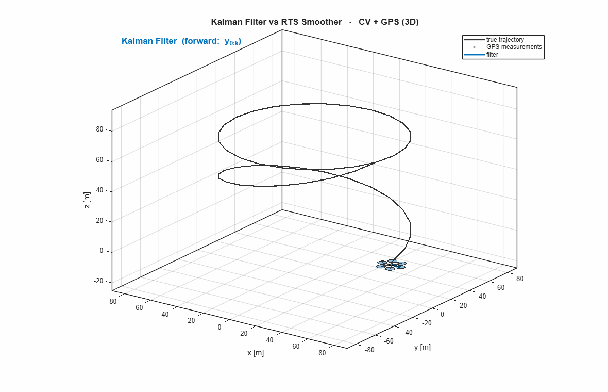
Filter vs Smoother: positions ($x,y,z$)
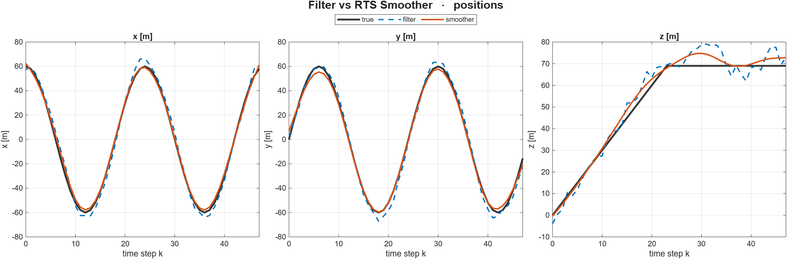
Position estimates versus time step $k$. The smoother (orange) tracks the true path more tightly than the causal filter (blue): position RMSE drops from 7.45 → 4.08 m.
Filter vs Smoother: velocities ($v_x,v_y,v_z$)
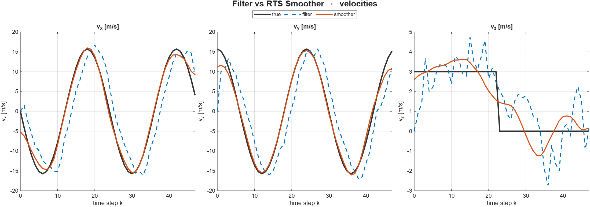
Velocity estimates versus time step $k$. Velocities are only observed indirectly, so the gain from smoothing is largest here: velocity RMSE drops from 7.54 → 2.06 m/s.
Filter vs Smoother: error histograms
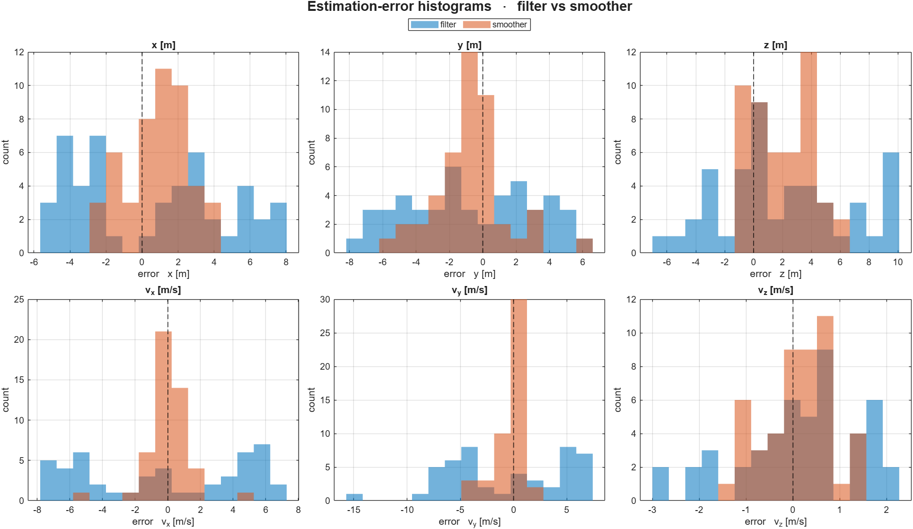
Filter vs Smoother: RMSE comparison
| variable | filter RMSE | smoother RMSE | improvement |
|---|---|---|---|
| $x$ | 4.12 m | 1.89 m | 54% |
| $y$ | 3.87 m | 2.26 m | 42% |
| $z$ | 4.85 m | 2.82 m | 42% |
| $v_x$ | 4.98 m/s | 1.35 m/s | 73% |
| $v_y$ | 5.52 m/s | 1.39 m/s | 75% |
| $v_z$ | 1.28 m/s | 0.72 m/s | 43% |
| position (3D) | 7.45 m | 4.08 m | 45% |
| velocity (3D) | 7.54 m/s | 2.06 m/s | 73% |
RMSE against ground-truth over the whole run ($N=48$). The RTS smoother improves every coordinate, most strongly the velocities.